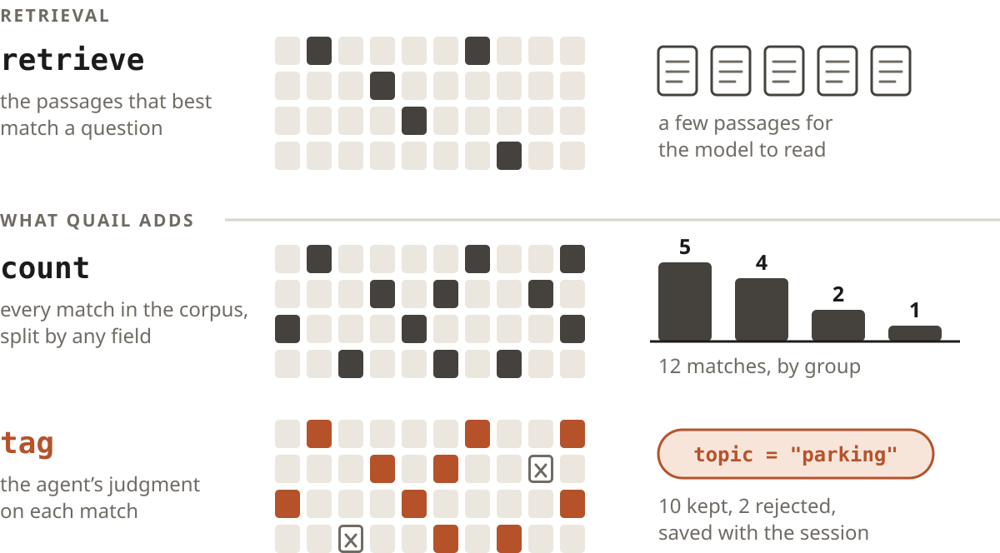
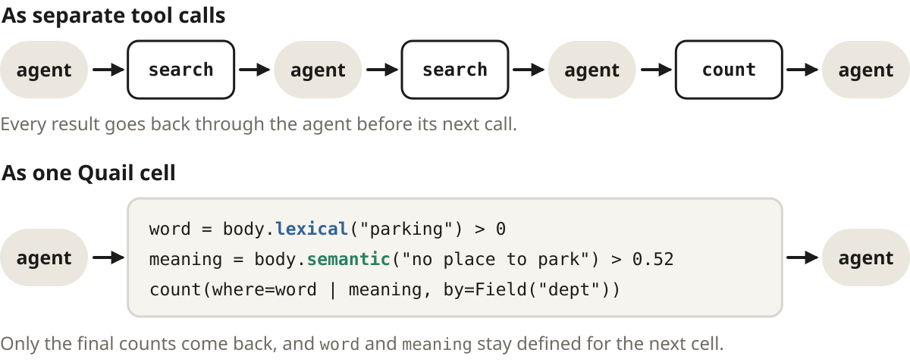

QuailAn Environment for Agentic Qualitative Analysis
Dashiell Coyier · DataSquad, Carleton College · coyierd@carleton.edu
github.com/dcoyier/Quail Apache-2.0
1Beyond retrieval
Quail lets an AI agent make sense of a large collection of text the way an analyst would in a notebook, one cell at a time, with every step saved.
Researchers often have more text than anyone can read closely. Campus offices, for example, collect open-ended survey answers that nobody has time to read in full.1 Retrieval-augmented generation2 helps a language model with a collection like that by handing it the few passages that best match a question. That can answer “what do people say about parking?” but not “how many people raised it, and where?”

Quail began as retrieval for an agent, and the step that changed it was adding count(). Counting runs over every row and can split the total by any field, so the agent can check how common something is instead of guessing from a handful of passages. Tags, the rest of the language and the saved history all grew from there.
2A notebook for an agent
A Jupyter notebook lets an analyst try something, look at the result and decide what to try next. Quail gives an agent the same loop. Each quail exec command runs one Python cell in a kernel that stays alive between commands, and the agent gets back what a notebook would show: whatever the cell printed, the value of its last line, or a traceback.
Searching, counting and tagging could have been separate tool calls. In Quail they are a small Python library instead, so one cell can combine them and send back only what matters. Cloudflare’s Code Mode makes the same choice for MCP tools but runs each snippet in a fresh sandbox;3 Quail keeps its kernel from one cell to the next.

Field("body")
a column of the dataset
body.lexical("parking")
keyword score (BM25); > 0 means the word appears
body.semantic("…")
closeness in meaning, from embeddings
a & b, a | b, ~a
combine conditions
count(where, by=…)
how many rows match, split by any field
retrieve(where, rank=…)
the matching rows themselves, to read
tag(where, "topic", "parking")
labels rows; the only thing a cell can write
3A session, cell by cell
Thirty invented answers to a staff survey question, “Is there anything else you’d like to tell us?” The agent has been asked how many people raised parking, and in which departments. Each numbered cell is one quail exec call, with its real output.
It starts with the word itself and reads every match.
[1]
body = Field("body")
word = body.lexical("parking") > 0
for e in retrieve(word):
print(e.id, e["body"][:58])
r01 The parking permit went up again this year and nobody expl
r04 Our team keeps a parking lot of ideas on the whiteboard, wfalse match
r07 Parking enforcement ticketed me while I was unloading equi
r13 When a meeting runs long, the chair says to put it in the false match
r14 The parking permit portal logged me out three times before
r21 Visitors complain that they cannot find parking for interv
r24 Accessible parking spaces are often taken by service vehic
r28 I get to work at seven just to be sure I have a place to p
Two of those are about a different kind of parking lot. To find complaints that never use the word, it searches by meaning and skips the rows it has already read.
[2]
meaning = body.semantic("no place to park near the building") > 0.52
for e in retrieve(meaning & ~word):
print(e.id, e["body"][:58])
r02 I spend fifteen minutes every morning circling for a spot
r05 The garage is full by 8:30 so I end up walking in from the
r10 There is nowhere to leave a car close to the building if y
r17 I would come in more often if I could reliably find somewh
The semantic scores sit close together (0.53 for r05, 0.50 for a complaint about air conditioning), so the cutoff has to be checked by reading. Happy with both lists, it tags them, clears the two false matches and counts by department.
As in Jupyter, a restart clears the variables. The tags survive, because each cell’s tags were saved to the session log before its reply came back. (A cell that fails saves none of its tags.)
[4]
count(by=Field("topic"))
Counter({None: 20, 'parking': 10})
[5]
word
NameError: name 'word' is not defined. Did you mean: 'ord'?
4How a cell runs
The first cell in a session starts a small background process, the session host, which keeps that session’s Python kernel running. The kernel reads the dataset from one SQLite file holding the rows, a keyword index, stored embeddings and the current tags, but it cannot write to it. When a cell tags rows, the host saves the cell to the session log first and only then updates the index and replies, so a reply means the work is already on disk.
5Studies live in git
A study is an ordinary folder of text files, so git can share it the way it shares code. Each kernel run writes its own log file, which means agents working in parallel never edit the same file. To try another approach without disturbing the first, quail fork copies a closed session’s tags and history into a new session.
Semantic search needs an embedding for every distinct text, and computing them the first time can take minutes on a large dataset. quail warm can do that work in advance, split across several machines, and save it in warm/, so every clone of the study starts with it.
6Where Quail runs
Quail needs only a shell, so it runs wherever an agent does, on a laptop or a cloud VM. In one setup, a study of TV news transcripts from six U.S. presidential elections is available in Slack. Mentioning @Cursor in a thread starts a cloud VM from a snapshot that already has Quail installed and the study fully processed, embeddings included, so the agent can search the whole dataset from its first cell.
Dashiell Coyier#quail-allen-news
@Cursor how is Obama characterized?
Cursor27 minutes later
“The portrait moves from rising uniter (2004), to a fight over whether he is a historic, gifted candidate or an unready celebrity (2008) … and by 2024 to a celebrated speaker.”
7Status and next steps
Quail 0.94 is an alpha release for Linux and macOS, open source under the Apache 2.0 license, and it works with any agent that can run shell commands. Nothing it has produced has been formally evaluated yet, and working out how to do that well is our next step. If you have a collection of text you would like to understand, we would love to hear about it.
To try it, with Python 3.12+ and uv:
$ git clone --depth 1 https://github.com/dcoyier/Quail.git
$ cd Quail && uv sync --locked --no-dev --python 3.12
$ . .venv/bin/activate && quail init ../my-study

 github.com/dcoyier/Quail
github.com/dcoyier/Quail